Initiation à Spark avec R en mode cluster
Au programme
MiDAS : une base de données volumineuse 📚
Utiliser MiDAS avec R : un défi 💭
sparklyrdans l’écosystème de R : quiz ❓La syntaxe
sparklyr: une syntaxe familière, celle dedplyr👨💻Le cluster spark : distribution des données️ 📂
Le cluster spark : distribution des traitements ⏳
Quelques bonnes pratiques 🤝
Pour aller plus loin 💡
Un rapide tour de table 💬
MiDAS : une base de données volumineuse 📚
Qu’est-ce que MiDAS ?


Une des bases les plus volumineuses du SSP

Les administrations dont les données sont comparables à MiDAS utilisent un cluster Spark : Insee, Drees, Acoss, UNEDIC, Cnaf
▶️Le cluster spark est une solution très efficiente pour traiter des données de cette ampleur.
Concrètement, qu’est-ce que MiDAS ?

Midas est disponible sous la forme de plusieurs tables au format parquet.
La documentation en ligne
Dictionnaire des données
Fiches présentant les concepts de l’indemnisation, du retour à l’emploi
Exemples d’implémentation en spark avec R
Conseils qualité des variables

Et vous, quels sont vos usages de MiDAS ? 👁️🗨️
Traiter MiDAS en R : un défi 👨💻
Traiter MiDAS en R classique : les limites
Nous ne pouvons pas manipuler les données Midas exhaustives sur notre ordinateur portable professionnel avec R classique pour deux raisons :
- En R classique, les données sont chargées en mémoire RAM : si les données sont plus volumineuses que la mémoire disponible, il n’est pas possible de les traiter.
Une bulle CASD
Le disque dur, aussi appelé Hard Disk Drive (HDD), est une solution de stockage permanente :
Les données sont conservées même après l’arrêt de l’appareil.
L’espace de stockage est volumineux.
Les opérations d’écriture et de lecture ne sont pas du tout instantannées.
La mémoire vive, aussi appelée RAM, se distingue de la mémoire de stockage (disque) :
par sa rapidité, notamment pour fournir des données au processeur pour effectuer des calculs ;
par sa volatilité (toutes les données sont perdues si l’ordinateur n’est plus alimenté) ;
par l’accès direct aux informations qui y sont stockées, quasi instantanné.
Le processeur :
permet d’exécuter des tâches et des programmes : convertir un fichier, exécuter un logiciel.
est composé d’un ou de plusieurs coeurs : un coeur ne peut exécuter qu’une seule tâche à la fois. Si le processeur contient plusieurs coeurs, il peut exécuter autant de tâches en parallèle qu’il a de coeurs.
se caractérise aussi par sa fréquence : elle est globalement proportionnelle au nombre d’opérations qu’il est capable d’effetuer par seconde.
Une bulle CASD
Pour des raisons de sécurité, les données Midas ne doivent être manipulées que via la bulle CASD sécurisée Midares dotée d’un cluster spark. Les ressources de la bulle sont partagées entre tous les utilsateurs simultanés :
- 256 Go de mémoire vive (ou RAM)
- Un processeur (ou CPU) composé de 16 coeurs
Même si ces ressources sont plus importantes que celle d’un ordinateur portable classique, elles ne suffisent pas pour traiter Midas. De plus, les utilisateurs sont en concurrence sur les ressources de la bulle.

Quizz
Le quizz suivant s’adresse aux personnes familières avec :
R classique en syntaxe
tidyverse;le format parquet et son traitement en R avec
arrow;duckDBetdbplyr;éventuellement
data.table.
❓Quizz ❓ sparklyr dans l’écosystème de R
Contexte
Vous travaillez sur votre ordinateur professionnel de la Dares. Vous disposez donc de 16 Go de mémoire RAM, d’un disque dur de plusieurs centaines de Go et de 6 coeurs dans votre processeur. Ce sont vos ressources informatiques sur lesquelles les traitements sont exécutés.
Vous travaillez uniquement en R via RStudio. Vous souhaitez effectuer des opérations de traitement de données et non de l’économétrie : sélectionner des colonnes, filtrer des lignes, etc.
Vous avez le choix entre différentes syntaxes : dplyr, data.table, SQLdans duckDB. Nous n’abordons pas R base.
Vous avez aussi le choix entre différents moteurs de calcul : R classique avec des data.frames, duckDB, arrow, data.table.
L’objectif de ce quizz est de comprendre les similitudes entre ces solutions que certains d’entre vous connaissent déjà, et spark avec sparklyr, la solution qui vous est présentée pour traiter les données Midas.
Question 1 — syntaxe et moteur de calcul
Avec quel moteur de calcul peut-on utiliser directement les fonctions principales de dplyr ?
Les fonctions principales sont filter(), mutate(), select(), summarise().
- A.
DuckDB - B.
arrow - C.
data.table - D. R classique sur un
data.frameou untibble
Réponse
Les bonnes réponses sont A, B et D :
DuckDBest compatible avec la syntaxedplyrgrâce au packagedbplyr;arrowet ses datasets sont compatibles avec cette syntaxe également ;les formats classiques de R (
data.table,tibble) peuvent aussi être manipulés via cette syntaxe.data.tablepeut également recevoir une syntaxedplyravecdtplyr, qui n’est pas abordé ici.data.tableest un moteur de calcul qui dispose initialement de sa propre syntaxe.
Définitions
dplyr fournit une syntaxe de code : une syntaxe permet de décrire ce que l’on veut faire : filtrer, agréger, joindre, etc.
Le moteur de calcul est le logiciel qui exécute réellement ces opérations, par exemple R, DuckDB ou arrow.
data.table est à la fois un moteur de calcul et une syntaxe particulière.
L’endroit d’exécution correspond aux ressources utilisées : ordinateur personnel dans notre cas, mais ce peut être un serveur partagé comme la bulle Midares. Un même moteur peut fonctionner dans plusieurs environnements.
À retenir pour Spark
Spark est un moteur de calcul. La syntaxe dplyr est compatible avec ce logiciel grâce aux packages sparklyr et dbplyr. Spark est exécuté sur un cluster spark, un nouvel endroit d’exécution.
Question 2 — utilisation de dplyr avec différents moteurs
Avec arrow et duckDB, quelles fonctions du tidyverse ne peut-on parfois pas utiliser ?
- A. Les fonctions de
lubridate - B.
group_by() - C.
rowwise()pour le traitement ligne par ligne - D.
case_when()
Réponse
Les bonnes réponses sont A, et C : en duckDB et en arrow(), toutes les fonctions du package lubridate ne sont pas utilisables. La logique ligne par ligne n’est pas non plus disponible.
Définitions
Une syntaxe dplyr est en fait traduite dans le langage adapté au moteur de calcul :
dbplyrpermet de traduiredplyren requête SQL ;arrowpermet de traduiredplyren instructions exécutables sur un dataset arrow.
Si une fonction ne dispose pas d’une traduction compatible avec le moteur de calcul, alors elle n’est pas utilisable.
À retenir pour Spark
Spark est un moteur de calcul.
Les packages sparklyr et dbplyr rendent compatibles les instructions dplyr avec ce moteur de calcul : dbplyr traduit les verbes dplyr en Spark SQL, lui-même traduit en instructions spark natives exécutables par le moteur de calcul spark.
Néanmoins, toutes les fonctions du tidyverse ne sont pas disponibles avec spark : c’est le cas de nombreuses fonctions de lubridate et de stringr, ainsi que de certaines fonctions de R base comme nrow().
Question 3 — lecture paresseuse de données
Que se passe-t-il quand on utilise arrow::open_dataset() sur un dossier de fichiers Parquet ?
- A. L’ensemble des lignes est immédiatement chargé en session R, c’est-à-dire dans la mémoire RAM.
- B. On peut ouvrir la table à partir de l’environnement de RStudio en cliquant dessus.
- C.
arrowexamine les métadonnées de la table : colonnes, type des colonnes = schéma de données (numérique, caractère, date), partitionnement des fichiers (un fichier par mois par exemple) etc. - D. Les colonnes et les lignes utiles pourront être lues plus tard lors de l’exécution d’un traitement.
Réponse
Les bonnes réponses sont C et D : arrow::open_dataset() ouvre une vue logique sur un ensemble de fichiers, sans charger immédiatement toutes les données dans R.
Comme les données ne sont pas chargées dans la session R, on ne peut pas ouvrir ces données et les consulter via l’environnement, contrairement à un data.frame R classique.
arrow peut consulter certaines métadonnées afin d’identifier notamment les fichiers du dataset, les colonnes, leurs types et les éventuelles partitions.
Définitions
On dit qu’avec arrow::open_dataset(), la lecture des données est paresseuse/lazy.
Avec read_parquet(ma_table, as_data_frame = TRUE), la lecture n’est pas lazy : la table est chargée en session R comme un data.frame classique.
duckdb::tbl_file(con, "data.parquet") est aussi une lecture paresseuse des données.
À retenir pour Spark
Spark est compatible avec le format parquet : les tables Midas au format parquet peuvent être lues de manière lazy avec spark.read.parquet( memory = FALSE). En spark, il ne faut utiliser que la lecture paresseuse des données (memory = False), beaucoup plus efficace.
Question 4 — évaluation paresseuse du programme
Dans un pipeline dplyr utilisant DuckDB, quelles opérations déclenchent une exécution ?
- A.
collect() - B.
mutate() - C.
compute() - D.
count() - E.
filter() - F.
print()
Réponse
Les bonnes réponses sont A, C et F : en duckDB, les verbes dplyr comme filter(), mutate(), summarise()viennent enrichir une requête, un plan de traitement, qui n’est exéctué que lorsque l’utilisateur demande un résultat (imprimer, collecter) ou ordonne l’exécution de la requête dans le moteur de calcul à “distance” = sans pouvoir visualiser son résultat dans la session R (compute()). On dit que duckDB est paresseux.
arrow peut aussi être paresseux : il faut exécuter collect() ou print() pour déclencher les calculs et récupérer un résultat visible dans la session R.
data.table et R classique (tidyverse sur data.frame) ne sont pas paresseux : à chaque fonction lancée (filter()) le calcul est exécuté et les données sont chargées et traitées. On parle de traitement eager.
Définitions
collect() constitue une frontière entre le moteur de calcul et R classique en session Rstudio. Avant collect(), les données restent dans le moteur, à distance de la session (au format de DuckDB ou de arrow). Après collect(), le résultat devient un data.frame R qu’on peut ouvrir via l’environnement de RStudio et consulter.
À retenir pour Spark
Spark est aussi paresseux : les transformations filter(), mutate(), summarise() sont insérées dans un plan de traitement, puis les actions comme print(), collect() déclenchent l’exécution du plan de traitement voire la récupération d’un résultat consultable en session R.
Question 5 — bonnes pratiques sur tables volumineuses
Quel que soit le moteur de calcul utilisé, quelles pratiques sont des bonnes pratiques quand on travaille sur des tables volumineuses de données ?
- A. Charger toutes les tables en mémoire avant de commencer les traitements, ou collecter les données avant de commencer
- B. Filtrer les lignes hors champ le plus tôt possible
- C. Traiter les données par morceaux lorsque leur chargement complet en mémoire est impossible et que les morceaux sont indépendants, à la place d’une seule requête globale sur toutes les données
- D. Sélectionner dès le début uniquement les colonnes utiles
- E. Trier les données à chaque étape pour visualiser mieux la table
- F. Utiliser les user defined functions avec
function, fonctions R personnalisées ligne par ligne
Réponse
Les bonnes réponses sont B, C et D. En général, le but est de réduire rapidement la taille des données traitées pour gagner en efficience et libérer des ressources informatiques. Le tri systématique est une opération coûteuse qu’il est préférable d’éviter sur données volumineuses lorsque c’est un tri de confort pour consulter la table.
Boucles for
Les boucles for ne sont généralement pas idéales, car elles répètent les lectures et les traitements au lieu de laisser le moteur optimiser une opération globale (duckDB, arrow). Elles peuvent toutefois être nécessaires lorsque les données dépassent la mémoire disponible et que chaque lot — par exemple chaque mois — peut être traité indépendamment.
À retenir pour Spark
Avec Spark, réduire rapidement le nombre de lignes et de colonnes et éviter de charger les données dans la mémoire restent des bonnes pratiques essentielles. En revanche, les boucles for, qui déclenchent souvent une succession de jobs, et les fonctions R personnalisées appliquées ligne par ligne sont à éviter encore davantage.
Spark est adapté aux données très volumineuses : il est préférable de ne pas scinder le traitement sur des sous-tables quand une unique requête est possible.
Conclusions du quizz
Spark avec sparklyr présente des similitudes avec d’autres manières de programmer en R :
Comme pour
duckDBetarrow, avecsparklyr, les tables Spark sont principalement manipulées avecdplyr(grâce àdbplyr), SQL et les fonctions spécifiques desparklyr; les expressions R base ne sont pas automatiquement traduites. Spark est un moteur de calcul,dplyrest sa syntaxe principale.Spark est compatible avec le format parquet et parcimonieux dans la lecture des données, comme d’autres moteurs de calcul (
arrow,duckDB).Spark est paresseux, comme d’autres moteurs de calcul (
arrow,duckDB).En spark, les tris globaux doivent être réservés aux situations où l’ordre des lignes est réellement nécessaire.
Avec spark, il faut éviter les boucles et les fonctions ligne à ligne (
rowwise()) lorsqu’un seul pipeline sur la table complète peut réaliser l’opération.
La syntaxe sparklyr : une syntaxe familière, celle de dplyr, mais un autre moteur de calcul
Syntaxe et moteur de calcul
Avec spark et sparklyr, il faut distinguer :
la syntaxe du programme : ce sont les instructions utilisées pour décrire le traitement. Avec
sparklyr, la syntaxe du programme est majoritairement celle dedplyr.le moteur de calcul : spark est un moteur de calcul, c’est le logiciel qui exécute réellement les opérations.
Pour utiliser le logiciel spark, il est possible d’utiliser plusieurs langages :
python avec
pyspark;R avec
sparkR: nous n’abordons pas cette syntaxe dans cette formation ;R avec
sparklyr:sparklyretdbplyrpermettent de traduire la syntaxedplyren instructions lisibles par le moteur de calcul spark.
Important
Le code est écrit dans RStudio, mais les opérations sur les tables sont exécutées par Spark et non par R.
Note
Spark est compatible avec le format parquet : avec sparklyr, on peut lire et écrire des tables parquet.
Le code dplyr doit être traduisible
Les principaux verbes sont utilisables : filter(), select(), mutate(), group_by(), summarise(), left_join() etc.
Les expressions placées à l’intérieur doivent également avoir un équivalent compris par Spark, traduisibles par sparklyr ou dbplyr.
En revanche, une fonction R arbitraire n’est pas automatiquement exécutable par Spark :
Certaines fonctions de
lubridatene sont pas disponibles en spark sous R.Certaines fonctions de
stringrégalement.Mes user defined functions (
function) ne sont pas nécessairement traduisibles en spark non plus.
Revenons en détails sur les différences syntaxiques entre sparklyr et le tidyverse.
Sparklyr, une syntaxe proche de dplyr
L’enchaînement d’opérations de dplyr suivant est compréhensible par spark :
Néanmoins, si vous sélectionnez ce programme et que vous appuyer sur Run dans Rstudio, il ne se passera “rien” : vous ne pourrez pas ouvrir et consulter le contenu de mmo_17_df_spark_modifie, aucun calcul ne sera vraiment exécuté.
Spark est dit paresseux : revenons sur cette notion.
Le chargement paresseux des données
Quand on lit une table Parquet avec Spark :
Spark crée une référence vers les données, mais ne transforme pas toute la table en data.frame R. Spark examine aussi les métadonnées de la table : colonnes, type des colonnes = schéma de données (numérique, caractère, date), etc.
À retenir
La table reste côté Spark. RStudio contient seulement un objet qui permet de manipuler cette table à distance. Le chargement est dit paresseux.
Pourquoi c’est important ?
Sur 700 Go de données, on ne veut surtout pas tout charger en mémoire R, contrairement à du R classique.
La lazy evaluation
Spark distingue deux types d’opérations :
Les transformations : prennent en entrée un
spark_data_frameet retournent unspark_data_frame, elles ne déclenchent aucun calcul.Par exemple, le programme ci-dessous ne déclenche pas d’exécution :
Les actions : forcent le calcul d’un résultat soit pour le récupérer en session RStudio, soit pour le stocker sous forme de table temporaire, et déclenchent l’exécution de toutes les transformations compilées jusqu’à l’appel de l’action.
Par exemple, le programme ci-dessous déclenche le calcul de toute la cellule précédente et retourne le nombre de contrat de la table dans la console R :
La lazy evaluation : un gain de temps considérable
La gestion des erreurs
En réalité, lorsqu’on appuie sur le bouton run, il ne se passe pas “rien”. Le code est traduit par dbplyr en instructions spark natives analysées par spark : les erreurs sont repérées avant même que le code soit exécuté !
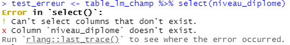
Récupérer un résultat
Définitions
collect() constitue une frontière entre le moteur de calcul (spark) et R classique en session Rstudio. Avant collect(), les données restent dans le moteur, à distance de la session (au format de DuckDB ou de arrow). Après collect(), le résultat devient un data.frame R qu’on peut ouvrir via l’environnement de RStudio et consulter.
Les principales actions sont :
print()pour afficher un petit résultat comme quelques statistiques descriptives ;head()+collect()pour lire quelques lignes d’une table ;sdf_nrow()pour récupérer le nombre de lignes de la table ;⚠️
collect()pour de petites tables : ne fonctionne pas sur des grosses tables ;tbl_cache()pour écrire unspark_data_frametemporaire (qui n’est pas consultable comme undata.frame).
Le bouton stop
Il est recommandé de ne pas utiliser ce bouton en programmant en sparklyr : il rend la session spark inutilisable par la suite. Préférez vous placer dans la console et appuyer sur ECHAP pour interrompre un traitement.
Les erreurs spark
Les erreurs de programmation sont soulevées avant que les calculs commencent. Des erreurs peuvent survenir pendant l’exécution du code, quelques minutes après l’appel d’une action par exemple.
Collecter des données trop volumineuses
Une source fréquente d’erreur pendant l’exécution est l’appel d’un collect() sur des données trop volumineuses pour être collectées. La première étape du débuggage consiste à limiter les collect().
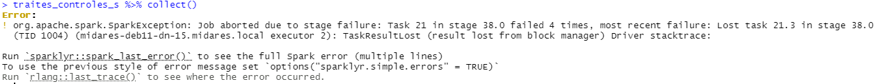


Les erreurs sparklyr
Les erreurs envoyées par spark ne sont pas toujours très lisibles, ou très précises sur la nature de l’erreur/sa source. En effet, nous avons vu que les instructions dplyr sont en fait traduite en instructions spark natives avant d’être lues et analysées par spark : c’est pourquoi les erreurs relevées sont majoritairement écrites en instructions spark natives.
Les principales différences syntaxiques
La majorité des commandes dplyr fonctionnent sur un spark_data_frame avec le package sparklyr. Les divergences principales sont les suivantes :
Fonctionnalitéimport d’un fichier |
|
|
| tri d’un tableau | arrange() |
window_order() |
| opérations sur les dates | lubridate |
fonctions natives spark SQL |
| opérations sur les chaînes de caractères et expressions régulières | stringr |
fonctions natives spark SQL |
| empiler des tableaux | bind_rows() |
sdf_bind_rows() |
| nombre de lignes d’un tableau | nrow() |
sdf_nrow() |
| export d’un fichier en parquet | write_parquet() |
spark_write_parquet() |
Exemples de traitement de dates
Les fonctions de lubridate()ne sont pas toutes adaptées au spark_data_frames.
- Convertir une chaîne de caractère de la forme AAAA-MM-DD en Date
- Calculer une durée entre deux dates :
datediff()plutôt que-,interval()oudifftime()
- Ajouter ou soustraire des jours ou des mois à une date :
date_add(),date_sub()etadd_months()
Add_months
Si la date en entrée est le dernier jour d’un mois, la date retournée avec add_months(date_entree, int(1)) sera le dernier jour calendaire du mois suivant.
Format
Le int() est important car ces fonctions Spark SQL n’acceptent que les entiers pour l’ajout de jours : taper uniquement 5 est considéré comme un flottant dans R.
❓Quizz ❓ la syntaxe de sparklyr
Question 1
Que contient un objet tbl_spark chargé avec spark_read_parquet(memory = FALSE) visible dans l’environnement RStudio ?
- A. Toutes les données chargées dans la RAM de R
- B. Une référence vers une table gérée par Spark
- C. Seulement les premières lignes de la table
- D. Un fichier Parquet
Réponse
La réponse est B : le chargement des données est paresseux, seules quelques métadonnées sont lues. Spark est ainsi plus adapté que R classique pour les données dont la taille dépasse la RAM.
Question 2
Parmi ces opérations, lesquelles sont des transformations lazy ?
- A.
filter() - B.
count() - C.
sdf_nrow() - D.
rename()
Réponse
Les bonnes réponses sont A, B et D : elles ne réclament pas la récupération d’un résultat en session R contrairement à sdf_nrow(), collect(), print() etc.
Question 3
Que fait collect() ?
- A. Il transfère l’ensemble de la table source dans Spark
- B. Il affiche seulement quelques lignes
- C. Il exécute le traitement et récupère son résultat dans R
- D. Il conserve le résultat sous forme de table Spark
Réponse
La réponse est C : collect() transforme le résultat spark en data.frame consultable par l’utilisateur. Ainsi, les mêmes contraintes s’appliquent alors sur les ressources qu’en R classique : le résultat collecté doit être suffisamment petit pour tenir dans la mémoire de la session R.
Question 4
Quel traitement est adapté à spark ?
Réponse
La réponse est A : avec Spark, il faut privilégier les opérations globales plutôt que les traitements R ligne par ligne (C) et on ne peut utiliser que les fonctions traduisibles par le moteur (pas rowwise() et ma_fonction(), B).
Pourquoi spark plutôt qu’un autre moteur de calcul ?
Jusqu’ici, on a vu que Spark ressemble à d’autres moteurs compatibles avec R (duckDB, arrow) : syntaxe dplyr, format parquet, lecture lazy, transformations, actions. Alors pourquoi choisir spark pour traiter Midas ?
Spark n’exécute pas seulement le traitement différemment, il l’exécute sur une infrastructure différente, le cluster spark.
La vraie différence n’est pas la syntaxe
La différence majeure est l’infrastructure d’exécution.
dplyr,data.table,DuckDBouarrowtravaillent principalement sur une machine : votre PC ou un serveur comme la bulle Midares.- Spark travaille sur un cluster : plusieurs machines (ordinateurs), coordonnées pour traiter les données.
Conséquence pour des données volumineuses
Avec 700 Go de données et de nombreuses tables à apparier, le problème n’est plus seulement d’écrire un bon code R.
Il faut un moteur capable de :
- répartir les données en partitions ;
- répartir les calculs sur plusieurs machines ;
- optimiser automatiquement le plan de traitement ;
- éviter de tout charger dans la mémoire de R.
Transition
Spark n’est donc pas choisi parce que sa syntaxe est plus agréable, mais parce que son mode de fonctionnement est distribué et non local.
Le cluster spark : distribution des données 📂
Quelques définitions informatiques
Une machine physique est un ordinateur réel qui dispose de processeurs, de mémoire RAM et de disque dur.
Une machine virtuelle ou VM est un ordinateur logiciel hébergé sur une machine physique, qui utilise une partie ou toutes les ressources de l’ordinateur réel sur lequel il est hébergé : ces ressources lui sont réservées.
Un cluster spark de type yarn est un ensemble de machines physiques connectées en réseau entre elles et capables de se coordonner pour effectuer des traitements spark.
Le système de stockage du cluster spark s’appelle HDFS et est un système de stockage distribué : les données sont partitionnées et leurs partitions sont réparties sont l’ensemble des disques durs des ordinateurs du cluster spark, sans que chaque machine connaisse l’ensemble des données.
Le cluster spark de la bulle Midares contient 15 ordinateurs physiques.
Chaque ordinateur dispose des ressources physiques suivantes :
160 Go de RAM
8 coeurs
un disque dur conséquent
Le cluster spark Midares
Le cluster spark est accessible via la bulle Midares : il faut d’abord se connecter à la bulle, configurer l’accès au cluster pour la première fois qu’on l’utilise, puis se connecter au cluster via RStudio pour chaque utilisation du cluster spark.

Connexion
library(sparklyr)
library(tidyverse)
# Fichier de configuration Spark
conf <- spark_config()
conf["spark.driver.memory"] <- "16g"
conf$spark.driver.maxResultSize <- 0
conf["spark.executor.cores"] <- 2
conf["spark.executor.memory"] <- "12g"
conf["spark.executor.memoryOverhead"] <- "5g"
conf["spark.executor.instances"] <- 5
conf["spark.default.parallelism"] <- 20
conf["spark.sql.shuffle.partitions"] <- 200
conf["spark.sql.adaptive.enabled"] <- "true"
conf["spark.sql.adaptive.coalescePartitions.enabled"] <- "true"
conf["spark.sql.adaptive.localShuffleReader.enabled"] <- "true"
conf["spark.sql.adaptive.skewJoin.enabled"] <- "true"
conf["spark.sql.adaptive.skewJoin.skewedPartitionFactor"] <- 2
conf["spark.sql.adaptive.skewJoin.skewedPartitionThresholdInBytes"] <- 64L * 1024L^2
conf["spark.locality.wait"] <- "1s"
sc <- spark_connect(master = "yarn", config = conf)Temps de connexion
Pour se connecter au cluster, il faut environ 5 minutes, à chaque connexion. Spark cluster n’est pas du tout adapté à des traitements légers (moins de 10 minutes).
La distribution des données
Les données sont distribuées sur les noeuds du cluster : chaque noeud ne dispose pas de toutes les données Midas sur son propre disque dur. Chaque morceau de données est répliqué trois fois.
Et mes bases sur la bulle ?
Les données de la bulle Midares ne sont pas enregistrées au même endroit que le cluster.
Il est possible de charger des bases enregistrées n’importe où sur la bulle sur HDFS : depuis vos documents personnels, depuis l’espace commun…


Le stockage distribué avec HDFS
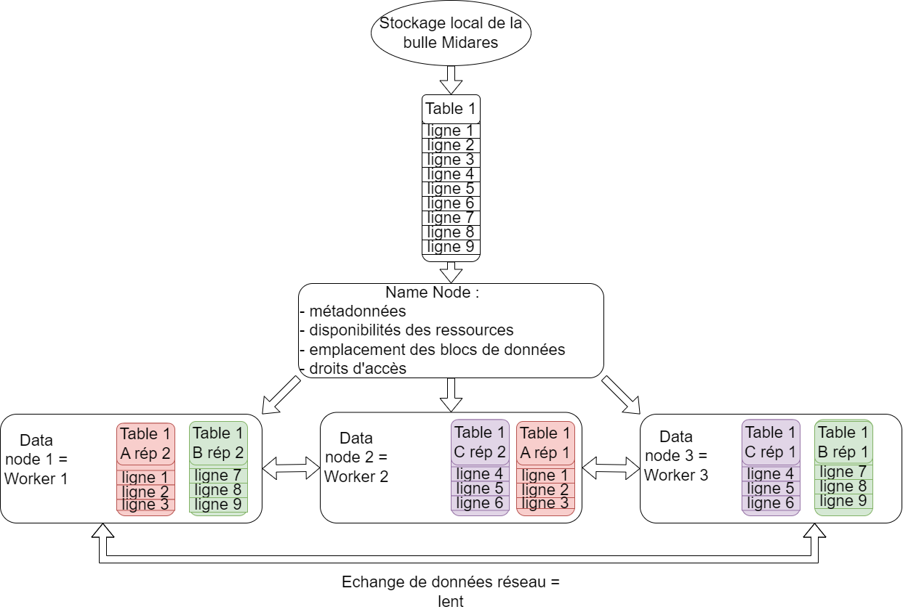
Chargement des données avec sparklyr
▶️ chargement en mémoire vive couteux en temps : par défaut, memory = FALSE
Spark interroge en réalité le NameNode HDFS pour savoir où sont situés les blocs de données de la table mmo_2017, et quelles sont les métadonnées de cette table. Chaque exécuteur a accès aux morceaux de données présents sur le disque dur du noeud sur lequel il est hébergé.
Spark data frames
mmo_17_df_spark est un spark data frame (sdf) : il ne peut pas être ouvert comme un data frame R classique, il n’est pas dans la session R, il reste dans tous les cas côté cluster.
Exporter des données depuis Spark vers HDFS
Après un traitement Spark, le résultat peut être exporté sur HDFS sans être rapatrié dans la session R.
A retenir
Exporter avec spark_write_parquet() écrit le résultat côté cluster, dans HDFS.
Cela permet de conserver une table produite par Spark sans utiliser collect().
Attention
mode = "overwrite" remplace les données déjà présentes dans le dossier cible.
L’export déclenche une action Spark : le plan de traitement est réellement exécuté au moment de l’écriture.
spark_write_parquet() sert bien à écrire une table en Parquet, avec un chemin pouvant être en hdfs://.
Télécharger des données en local
Il est également possible de transférer des données de HDFS vers la bulle en les téléchargeant : c’est utile par exemple quand on a créé notre table finale avec spark et qu’on veut utiliser un package d’économétrie sur la bulle en local.
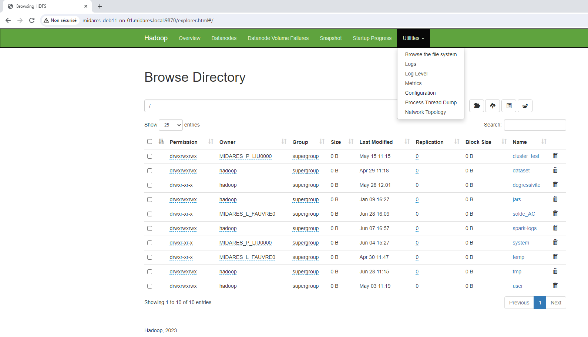

❓ Quiz — La distribution des données dans Spark
Question 1 — Données locales ou données sur cluster
Quelle est la différence entre une donnée stockée dans la bulle Midares et une donnée stockée dans HDFS ?
- A. Une donnée dans la bulle Midares est stockée sur l’environnement de travail RStudio
- B. Une donnée dans HDFS est répartie sur plusieurs nœuds du cluster
- C. Une donnée dans HDFS est nécessairement chargée dans la RAM de R
- D. Une donnée dans la bulle Midares est automatiquement distribuée sur le cluster
Réponse
Les bonnes réponses sont A et B.
La bulle Midares correspond à l’environnement depuis lequel on lance le code. HDFS correspond au stockage distribué du cluster : les fichiers y sont découpés et répartis entre plusieurs nœuds.
Question 2 — Lecture paresseuse des données
Quand on lit une table Parquet avec spark_read_parquet(memory = FALSE), que se passe-t-il ?
- A. La table entière est chargée dans la RAM de R
- B. Spark crée une table distante qui référence les fichiers Parquet
- C. Les traitements seront réellement exécutés lorsqu’une action demandera un résultat
- D. Toutes les données sont immédiatement copiées dans la bulle Midares
Réponse
Les bonnes réponses sont B et C.
La lecture crée une table Spark liée aux fichiers Parquet, sans rapatrier toute la table dans R. Les transformations restent lazy : Spark construit un plan de traitement, puis l’exécute lorsqu’une action demande un résultat.
Question 3 — Le rôle du NameNode
Que contient principalement le NameNode HDFS ?
- A. Toutes les données des fichiers HDFS
- B. Les métadonnées des fichiers et l’emplacement de leurs blocs
- C. Les résultats des traitements Spark
- D. Les ressources en RAM et en processeurs du cluster
Réponse
La réponse est B.
Le NameNode connaît l’organisation des fichiers et l’emplacement de leurs blocs, mais il ne stocke pas les données elles-mêmes.
Question 4 — Le rôle des DataNodes
Où les données HDFS sont-elles réellement stockées ?
- A. Sur les disques des différents DataNodes
- B. Dans la RAM du driver Spark
- C. Dans la session RStudio
- D. Sur le disque de la bulle Midares
Réponse
La réponse est A.
Les fichiers sont découpés en blocs répartis sur les disques des différents nœuds du cluster. Les services DataNode permettent de lire et d’écrire ces blocs.
Question 5 — Les partitions Spark
Qu’est-ce qu’une partition Spark ?
- A. Une copie complète de la table
- B. Une portion des données pouvant être confiée à une tâche Spark
- C. Une machine physique du cluster
- D. Un fichier obligatoirement stocké sur un seul DataNode
Réponse
La réponse est B.
Spark découpe les données en partitions afin de pouvoir traiter plusieurs portions de la table en parallèle.
Une partition Spark ne correspond pas nécessairement exactement à un fichier Parquet, à un dossier de partitionnement Parquet ou à un bloc HDFS. C’est un objet de type spark.
Le cluster spark : distribution des traitements ⏳
Le driver en sparklyr

Le programme R est traduit en Spark SQL grâce aux packages
sparklyretdbplyrdans la session R.Le driver traduit le programme SQL en instruction spark : un plan logique de traitement.
S’il remarque une erreur, l’erreur est envoyée directement à l’utilisateur en session R avant l’exécution du programme : c’est la force de la lazy evaluation.
Le driver optimise le programme
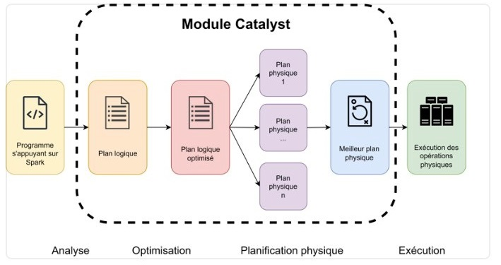
source : documentation CASD
Le driver optimise le programme
Spark optimise automatiquement les programmes soumis :
Compilation des transformations pour soulever les éventuelles erreurs.
Intégration dans un plan logique d’exécution contenant les étapes nécessaires pour parvenir au résultat demandé par le programme.
Optimisation du plan logique par le module Catalyst (driver Spark).
Le driver optimise le programme
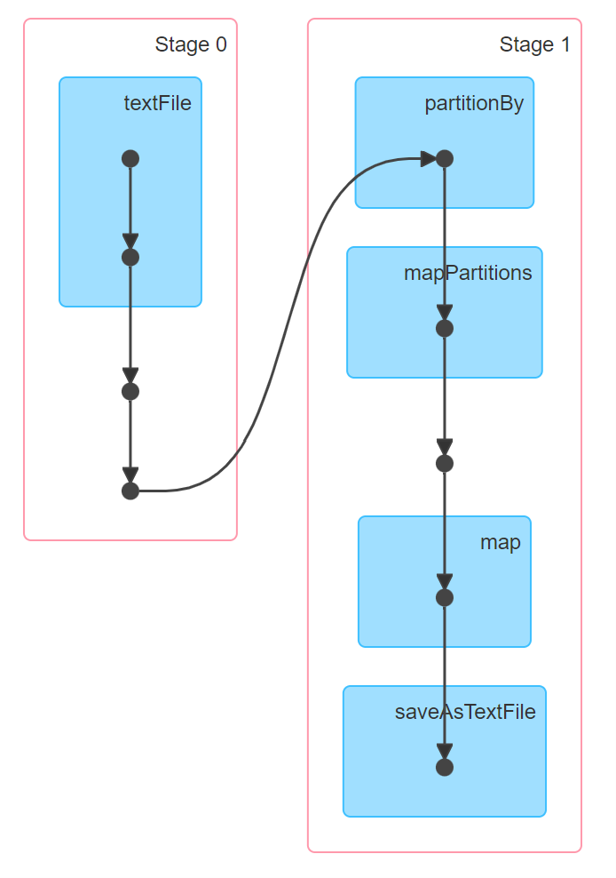
Le driver optimise le programme
Par exemple si j’écris le programme :
Catalyst réécrit :
Cette optimisation est réalisée sur toutes les transformations compilées avant qu’une action déclenche l’exécution.
Le driver optimise le programme
Le driver n’optimise que les transformations comprises entre des actions : à partir de l’action, spark ne lit pas la suite du programme.
Pour profiter des avantages de spark, la manière de programmer recommandée est différente de celle prédominante en R classique. On évite quoi ?
On évite :
de mettre des
collect()sur chaque table intermédiairede
collect()une table entièrede
print()à chaque étape
Sinon Catalyst ne voit pas la suite du code et ne peut pas l’optimiser.
Le driver optimise le programme
La longueur du plan logique
Fournir un plan logique très long sans déclencher d’action peut créer une erreur en spark : spark “refuse” d’optimiser un plan si long.
La bonne pratique consiste à “cacher” des résultats intermédiaires, pour déclencher l’exécution régulièrement et conserver les résultats en mémoire, tout en nettoyant la mémoire des résultat intermédiaires précédents :
table_1 <- mon_champ %>%
left_join(table_2) %>%
mutate(variable_1 = indicatrice_1 + indicatrice_2,
regroupement_variable_2 = case_when(variable_2 %in% c(1,2,3) ~ "A",
variable_2 %in% c(5,8,9) ~ "B",
TRUE ~ "C")) %>%
left_join(table_3) %>%
sdf_register("table_1")
tbl_cache(sc, "table_1")
table_4 <- table_1 %>%
left_join(table_5) %>%
mutate(variable_y = ifelse(variable_x > 50, 1, 0)) %>%
sdf_register("table_4")
tbl_cache(sc, "table_4")
tbl_uncache(sc, "table_1")Le driver distribue les traitements
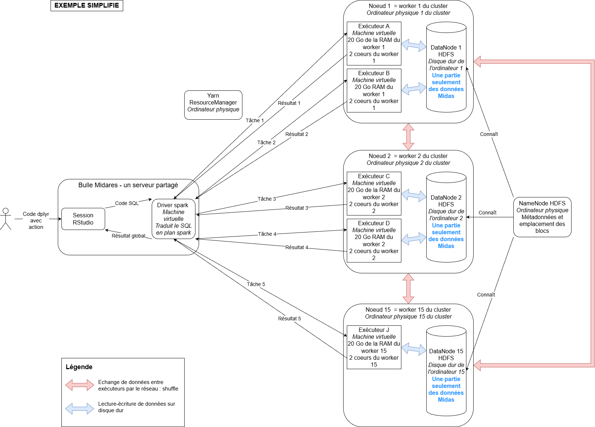
Le driver distribue les traitements
Le driver ne se contente pas d’optimiser le plan logique : il le transforme ensuite en plan physique.
Ce plan physique indique concrètement :
- quelles tâches doivent être exécutées ;
- sur quelles morceaux de données appelés partitions de données ;
- par quels exécuteurs ;
- dans quel ordre.
Data locality
Spark essaie autant que possible d’envoyer les tâches près des données.
Si un bloc HDFS est présent sur le nœud 1, Spark cherchera à faire exécuter la tâche par un exécuteur situé sur ce même nœud.
Objectif : limiter les lectures à distance et les transferts réseau de données, longs et coûteux en ressources.
Le rôle de l’exécuteur
L’exécuteur effectue le morceau de programme qu’on lui affecte :
il ne connaît que les tâches qu’on lui a affectées ;
il peut communiquer avec le driver en réseau pour renvoyer un résultat ;
il peut communiquer avec les autres workers en réseau pour partager des données ou des résultats intermédiaires : c’est un shuffle.
Le calcul n’est pas seulement distribué, il est parallèle : chaque exécuteur travaille en parallèle des autres, d’où l’efficience de spark.
Important
Le partage de données entre exécuteurs est lent : c’est un échange via le réseau. Il est important d’identifier les opérations qui nécessitent un shuffle de celles qui n’en impliquent pas.
Traitement MAP distribué
Un traitement MAP n’implique pas de shuffle. C’est le traitement parallèle par excellence : l’exécuteur peut effectuer la totalité du traitement commandé par le driver sans interragir ou attendre des données des autres exécuteurs.
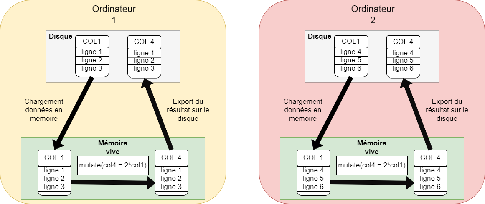
Traitement REDUCE distribué
Les traitements REDUCE impliquent des shuffles.
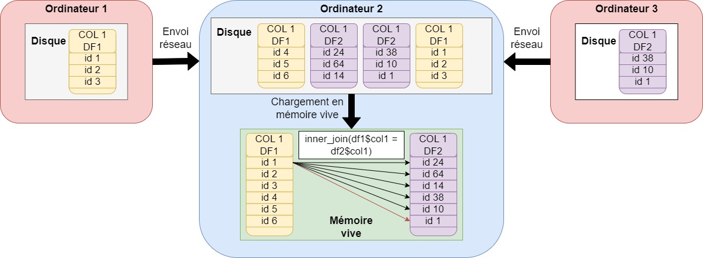
Le shuffle
Quelles opérations provoquent souvent un shuffle ?
Un shuffle apparaît lorsque Spark doit redistribuer les lignes entre exécuteurs pour réunir les données nécessaires au même endroit.
Opérations souvent coûteuses
group_by()+summarise()
→ regrouper toutes les lignes d’un même groupeleft_join(),inner_join(), etc.
→ réunir les lignes ayant la même clé de jointuredistinct()
→ comparer les lignes pour supprimer les doublonsarrange()
→ trier globalement les donnéesrepartition()
→ changer volontairement la répartition des données
À retenir
Un shuffle n’est pas interdit, mais il est coûteux : il implique des échanges réseau, des écritures temporaires sur disque et parfois beaucoup de mémoire.
Il faut donc éviter les shuffles inutiles, surtout les tris ou dédoublonnages de confort.
Calcul distribué, calcul vectoriel : boucles for
Cas d’usage : je veux repérer si un groupe d’individus est au RSA un mois, deux mois, trois mois etc. après la sortie de l’assurance-chômage
J’utilise :
le FNA, dont j’extraie une table individu avec le mois de sortie de l’assurance-chômage, table
sortiesles tables mensuelles de la CNAF
cnaf_prestations_mois_m
Calcul distribué, calcul vectoriel : boucles for
Lance 12 X tous les mois de sortie jobs spark, beaucoup de shuffles
library(dplyr)
library(sparklyr)
res_all <- NULL
for (mois in mois_sortie_vec) { # 1ère boucle sur les mois de sorties
# Sous-ensemble des sortants de ce mois
sorties_mois <- sorties %>%
filter(mois_sortie == !!mois) %>%
select(id, mois_sortie)
for (h in 1:12) { # 2ème boucle sur les 12 mois d'horizon
mois_cible <- as.Date(mois) + months(h)
nom_tbl <- paste0("cnaf_prestations_", format(mois_cible, "%Y_%m"))
table_mois_cnaf <- spark_read_parquet(paste0(chemin_table, nom_tbl))
perception_RSA_mois_h <- sorties_mois %>%
mutate(mois_h = sql(paste0("add_months(mois_sortie, ", h, ")"))) %>%
inner_join(table_mois_cnaf, by = c("id" = "id", "mois_h" = "mois")) %>%
mutate(perception_RSA = ifelse(RSAVERS == "C" & MTRSAVER > 0, 1, 0)) %>%
transmute(id, mois_sortie, h = !!h, perception_RSA)
# empiler et mettre en cache le résultat
res_all <- if (is.null(res_all)) perception_RSA_mois_h else sdf_bind_rows(res_all, perception_RSA_mois_h) %>% sdf_register(paste0("temp", mois, h))
tbl_cache(sc, paste0("temp", mois, h))
}
}Lance 12 jobs et une action à chaque tour
for (mois in liste_mois) {
nom_tbl <- paste0("cnaf_prestations_", format(mois, "%Y_%m"))
table_mois_cnaf <- spark_read_parquet(paste0(chemin_table, nom_tbl))
# Jointure globale, calcul de l'horizon h
perception_RSA_mois <- table_mois_cnaf %>%
inner_join(sorties, by = "id") %>%
mutate(h = sql("cast(months_between(mois, mois_sortie) as int)")) %>%
filter(h >= 1, h <= 12) %>%
select(id, mois_sortie, h, prest)
# Cache pour enregistrer le résultat en mémoire
perception_RSA_mois_cache <- perception_RSA_mois %>% sdf_register(paste0("temp", mois))
tbl_cache(sc, paste0("temp", mois))
res_stack <- if (is.null(res_stack)) joined_cached else sdf_bind_rows(res_stack, joined_cached)
}Meilleure solution : un seul plan logique que Catalyst peut entièrement optimsier, en limitant les shuffles, beaucoup plus rapide
# Charger la première table CNAF
nom_1 <- paste0("cnaf_prestations_", format(as.Date("2023-01-01"), "%Y_%m"))
cnaf_total <- spark_read_parquet(paste0(chemin_table, nom_1))
# Empiler les autres
for (mois in liste_mois) {
nom_tbl <- paste0("cnaf_prestations_", format(mois, "%Y_%m"))
table_mois_cnaf <- spark_read_parquet(paste0(chemin_table, nom_tbl))
cnaf_total <- sdf_bind_rows(cnaf_total, table_mois_cnaf) %>%
sdf_register("cnaf_total")
tbl_cache(sc, "cnaf_total")
}
# Joindre UNE fois avec la table des sorties (broadcast si petit)
sorties_b <- sdf_broadcast(sorties %>%
select(id, mois_sortie)
)
perception_RSA_horizon <- cnaf_total %>%
inner_join(sorties_b, by = "id") %>%
mutate(
h = sql("cast(months_between(mois, mois_sortie) as int)")
) %>%
filter(h >= 1, h <= 12) %>%
select(id, mois_sortie, h, prest)Calcul distribué, calcul vectoriel : jointures
Une jointure implique pour spark de rappatrier les lignes avec les mêmes valeurs de clef sur le même worker : les jointures engendrent des shuffles.
Lorsque l’on joint une grosse table avec une petite table, Spark peut optimiser le calcul en utilisant un broadcast join : la petite table est diffusée en entier sur chaque worker, ce qui évite un shuffle massif.
👉 Ici petite_table est diffusée (broadcast) sur tous les workers : chaque partition de grosse_table fait alors le join localement, sans transfert réseau coûteux.
Calcul distribué, calcul vectoriel : jointures
Broadcast automatique : par défaut, Spark choisit automatiquement le broadcast join si la table à diffuser fait moins de 10 MB (paramètre configurable).
Au-delà, il utilise un shuffle join classique (plus lent).
👉 Bonne pratique : forcer avec sdf_broadcast() quand on sait que la table est petite, plutôt que de compter sur ce comportement implicite.
Calcule distribué, calcul vectoriel
| Opération logique | Solution non vectorielle | Solution vectorielle |
|---|---|---|
| situation à m + 1, 2… | Boucle for sur les mois | utilisation de lag() et lead(), ou auto jointure sur les dates |
| Répéter une fonction | user defined functions (UDF) | éviter les UDF |
| opération groupe de lignes | group_by %>% mutate %>% distinct |
group_by %>% summarise |
| joindre petite table avec grosse table | petite_table %>% left_join(grosse_table) |
broadcast join |
| joindre deux grosses tables | boucle for en divisant les tables en petits morceaux | unique jointure et partition par la clef de jointure |
| construire un panel cylindré | boucle for | cross_join() de deux tables |
❓ Quiz — La distribution des traitements dans Spark
Question 1 — Le rôle du driver
Quel est le rôle principal du driver Spark ?
- A. Stocker les blocs des fichiers HDFS
- B. Construire les plans d’exécution et distribuer les tâches aux exécuteurs
- C. Exécuter lui-même toutes les opérations sur les données
- D. Remplacer la session RStudio
Réponse
La réponse est B.
Le driver coordonne l’application Spark : il construit les plans de traitement, organise les calculs et envoie les tâches aux exécuteurs.
Question 2 — Le rôle des exécuteurs
Quelles affirmations décrivent correctement un exécuteur Spark ?
- A. Il exécute les tâches envoyées par le driver
- B. Il traite les partitions de données qui lui sont confiées
- C. Il traduit le code
dplyren Spark SQL dans la session R - D. Il est un ordinateur physique
Réponse
Les bonnes réponses sont A et B.
Un exécuteur est un processus situé sur un noeud worker : le noeud worker est l’ordinateur physique, l’exécuteur est virtuel et n’occupe qu’une partie des ressources du noeud sur lequel il est hébergé. Il exécute les tâches Spark sur les partitions qui lui sont confiées.
Question 3 — Plan de traitement
Que cherche à déterminer le driver spark lors de la construction du plan de traitement ?
- A. Les opérations logiques à exécuter
- B. Les éventuelles erreurs de code
- C. Le nombre de lignes que RStudio peut afficher dans l’environnement
- D. Le placement des tâches au plus près des données (sur les noeuds) lorsque cela est possible
Réponse
Les bonnes réponses sont A, B et C.
Les opérations logiques sont ordonnées dans un plan logique.
Ensuite, le driver construit le plan physique qui décrit comment le traitement sera exécuté. Spark découpe ensuite ce traitement en tâches et cherche, lorsque cela est possible, à exécuter les calculs sur les noeuds proches des données.
Cette recherche de proximité est appelée data locality.
Question 4 — Les shuffles
Quelles opérations peuvent souvent provoquer un shuffle ?
- A.
distinct() - B.
select() - C.
group_by()suivi desummarise() - D. Une jointure entre deux grandes tables
- E.
filter() - F. Un tri global avec
arrange()
Réponse
Les bonnes réponses sont C, D, E et F.
Ces opérations peuvent obliger Spark à redistribuer les lignes entre les exécuteurs afin de réunir au même endroit les données ayant une même clé ou devant être comparées.
Ce transfert de données intermédiaires entre exécuteurs est appelé un shuffle. Il implique généralement des échanges réseau et des écritures temporaires sur disque.
Question 5 — Programmer pour un traitement distribué
Pourquoi faut-il privilégier des opérations globales et traduisibles par Spark ?
- A. Elles permettent à Spark d’optimiser et de distribuer automatiquement le traitement
- B. Elles obligent le driver à traiter chaque ligne séparément
- C. Elles évitent les traitements R ligne par ligne et les successions inutiles de jobs
- D. Elles garantissent qu’aucun shuffle ne se produira jamais
Réponse
Les bonnes réponses sont A et C.
Avec Spark, il faut décrire le traitement sur un ensemble de lignes et laisser le moteur organiser son exécution sur les partitions.
Les boucles lançant de nombreux jobs, rowwise() et les fonctions R personnalisées appliquées ligne par ligne empêchent Spark de profiter pleinement de son optimisation et de son exécution distribuée.
Une opération globale peut néanmoins provoquer un shuffle : elle n’est donc pas toujours gratuite.
Quelques bonnes pratiques 🤝
La mémoire du driver
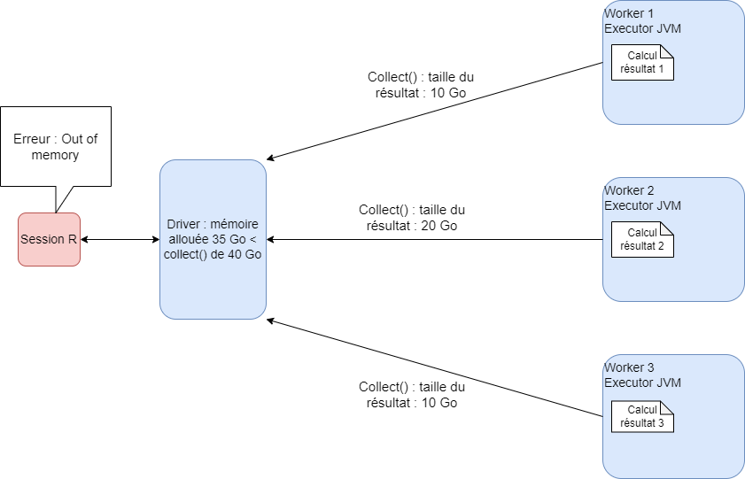
Programmer sans collecter
La programmation en spark doit être adaptée aux contraintes de volumétrie des données.
La principale différence avec la programmation en R classique est que la visualisation de tables complètes volumineuses n’est pas toujours possible et n’est pas recommandée :
goulets d’étranglement même avec spark, car toutes les données sont rapatriées vers le driver puis vers la session R : erreurs Out of Memory
longue : échange entre tous les noeuds impliqués dans le calcul et le driver, puis un échange driver-session R en réseau = lent ;
beaucoup moins efficace que l’export direct en parquet du résultat (qui fonctionne toujours) : charger ensuite sa table finale en data frame R classique pour effectuer l’étude.
Je veux voir ma table
- Vérifier le nombre de lignes sans collecter
- Vérifier la présence de doublons
Exporter des données sur disque
Sur la pause déjeuner par exemple.
Export des spark data frames directement sous HDFS : à aucun moment on n’ouvre la table : on peut traiter des données beaucoup plus volumnieuses que la mémoire RAM !
Possibilité de récupérer ce fichier sur la bulle MiDARES = en local.
Exporter des données sur disque
Les exports sur HDFS
Lorsqu’on exporte une table depuis notre session R vers HDFS, celle-ci est automatiquement partitionnée, comme le reste des données.
Ainsi, cette table sera stockée en plusieurs morceaux sous HDFS et répliquée.
Il est possible de maîtriser le nombre de partitions avec la commande sdf_coalesce(partitions = 1) du package sparklyr.
Avec sdf_coalesce(partitions = 1), on n’aura qu’un seul fichier à télécharger depuis HDFS. L’export est beaucoup plus rapide.
Avec sdf_coalesce(partitions = 200), on aura 200 morceaux de notre fichier à télécharger à la main (pas possible de faire tout sélectionner sous HDFS !).
Fermer sa session
Il faut impérativement fermer sa session spark après une session de travail. Deux moyens pour ça :
fermer R Studio
si on ne ferme pas RStudio, utiliser la fonction
spark_disconnect_all()dans son code
Si on souhaite lancer un code le soir en partant, on n’oublie pas le spark_disconnect_all() à la fin du code.
Partage des ressources
Les ressources réservées par un utilisateur ne sont libérées pour les autres que lorsqu’il se déconnecte. Ne pas se déconnecter, c’est bloquer les ressources.
Nous fermerons les sessions ouvertes trop longtemps (départ de congés sans déconnexion) si des utilisateurs présents en ont besoin : risque de perte du travail non enregistré.
Programmer de manière adaptée au calcul distribué : conclusion
Pour programmer en spark de manière optimale :
Programmer de manière vectorielle : pas de boucles for, pas de tri inutile
Déclencher une action après plusieurs transformations pour laisser Catalyst optimiser, mais pas après un trop gros nombre de transformations pour éviter une erreur
Ne pas collecter tout une table
Persister ou cacher une table qu’on va appeler plusieurs fois ou pour déclencher une action intermédiaire
Exporter les tables intermédiaires volumineuses en 10 partitions, et les tables finales en 1 seule partition
Et ensuite ?
Spark est un outil de traitement de données volumineuses. Il n’est pas adapté pour faire de l’économétrie : tous les packages R ne sont pas traduits en spark. Conseils :
Créer sa table d’étude en appariant les tables de MiDAS avec le cluster spark
L’exporter sous HDFS
La télécharger en local
La charger en R classique pour faire de l’économétrie
Les bonnes pratiques 🤝
Ne jamais modifier la configuration fournie
Consulter les tutoriels pratiques sur la bulle
Consulter les fiches de la documentation Midas
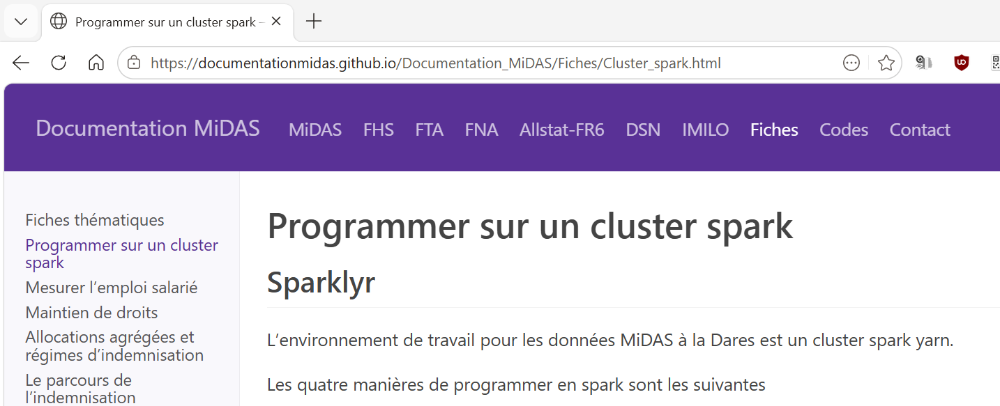
❓ Quiz — Bonnes pratiques sur cluster YARN
Question 1 — Libérer les ressources
Que faut-il faire à la fin d’une session de travail Spark ?
- A. Laisser la session ouverte au cas où
- B. Fermer la connexion Spark avec
spark_disconnect(sc) - C. Arrêter les traitements inutiles
- D. Collecter toutes les tables avant de quitter
- E. Fermer la connexion Spark en fermant RStudio
Réponse
Les bonnes réponses sont B, C et E.
Sur un cluster partagé, une session Spark ouverte continue à réserver des ressources. Il faut donc libérer les ressources dès qu’on n’en a plus besoin.
Question 2 — Configuration recommandée
Peut-on modifier librement la configuration Spark recommandée ?
- A. Oui, pour obtenir plus de RAM et plus de cœurs
- B. Oui, si le traitement échoue une première fois
- C. Non, sauf consigne ou validation explicite
- D. Non, car le cluster est partagé et les ressources doivent rester équilibrées entre utilisateurs
Réponse
Les bonnes réponses sont C et D.
Sur un cluster YARN partagé, demander trop de mémoire ou trop de cœurs peut pénaliser les autres utilisateurs, créer de l’attente ou provoquer des échecs d’allocation. On utilise donc la configuration recommandée, sauf besoin justifié et validé. La configuration a été testée par l’équipe en charge du cluster : elle est adaptée pour des traitements lourds sur les données Midas.
Question 3 — Erreur Out Of Memory
En cas d’erreur mémoire, quelles sont les bonnes premières réactions ?
- A. Vérifier qu’on ne fait pas un
collect()trop tôt ou sur une table trop grosse - B. Réduire le volume avant les opérations coûteuses :
select(),filter(), agrégation - C. Vérifier les jointures qui peuvent multiplier le nombre de lignes
- D. Augmenter soi-même fortement la mémoire des exécuteurs
- E. Découper ou matérialiser des étapes intermédiaires avec
tbl_cache()voire un export parquet intermédiaire si le pipeline est trop lourd
Réponse
Les bonnes réponses sont A, B, C et E.
Une erreur mémoire ne se règle pas en demandant plus de ressources. Il faut d’abord chercher à réduire la taille des données traitées, éviter les collect() inutiles, contrôler les jointures et simplifier le plan de traitement.
Question 4 — collect() sur cluster
Quelle est la bonne utilisation de collect() ?
- A. Collecter la table source complète pour travailler ensuite en R
- B. Collecter seulement un résultat réduit et exploitable localement
- C. Collecter après avoir filtré, sélectionné et agrégé dans Spark
- D. Collecter uniquement quelques lignes pour vérifier chaque étape du pipeline
Réponse
Les bonnes réponses sont B, C et D.
collect() ramène le résultat dans la session R. Il faut donc l’utiliser uniquement lorsque le résultat est suffisamment petit pour tenir en mémoire locale.
Question 5 — Déclencher des actions
Quand faut-il déclencher une action Spark ?
- A. Après chaque ligne de code pour vérifier immédiatement
- B. Jamais avant la toute fin, même si le pipeline devient très long
- C. À des moments stratégiques pour vérifier, matérialiser ou récupérer un résultat
- D. Avec
compute()lorsqu’on veut exécuter une étape intermédiaire tout en gardant le résultat côté Spark - E. Avec
collect()lorsqu’on veut récupérer un petit résultat final dans R
Réponse
Les bonnes réponses sont C et E.
Déclencher trop souvent des actions crée beaucoup de jobs et ralentit le traitement. Mais ne jamais matérialiser un pipeline très long peut aussi poser problème : la requête SQL générée par sparklyr/dbplyr peut devenir trop complexe ou trop longue. compute() doit être abandonné au profit de tbl_cache().
Question 6 — Bonne stratégie globale
Quelle stratégie est la plus adaptée sur un cluster Spark partagé ?
- A. Écrire un seul très long pipeline, puis tout collecter à la fin
- B. Réduire les données tôt, éviter les actions inutiles et matérialiser quelques étapes clés
- C. Augmenter les ressources dès qu’un traitement est lent
- D. Programmer comme en R local, mais avec plus de RAM
- E. Eviter les étapes qui induisent des shuffles qui ne sont pas absolument nécessaires : le tri de confort par exemple
Réponse
Les réponses sont B et E.
Sur cluster, il faut limiter les données lues, déplacées et collectées, tout en déclenchant quelques actions utiles pour contrôler et stabiliser le traitement.
Question 7 — Nombre de partitions avant un export
Quelles sont les bonnes pratiques avant d’exporter une table Spark ?
- A. Exporter systématiquement toutes les tables dans une seule partition
- B. Pour une table intermédiaire encore utilisée dans Spark, conserver environ 10 à 20 partitions
- C. Pour une table finale suffisamment réduite, regrouper les données dans une seule partition
- D. Créer le plus grand nombre possible de partitions
- E. Limiter le nombre de partitions permet de réduire le temps d’export
Réponse
Les bonnes réponses sont B, C et E.
Chaque partition Spark produit généralement un fichier lors de l’écriture. Sur notre cluster, multiplier les partitions augmente donc le nombre de fichiers à créer et le temps d’export.
- Une table finale suffisamment petite peut être exportée dans une seule partition, ce qui facilite son téléchargement puis son chargement dans R pour l’économétrie.
- Une table intermédiaire doit conserver environ 10 à 20 partitions afin de rester distribuée et de pouvoir être retraitée efficacement par Spark.
La partition unique est donc réservée aux résultats finaux réduits : elle serait inefficace pour une table encore très volumineuse.
Pour aller plus loin
Partitionnement
Le format .parquet (avec arrow) et le framework spark permettent de gérer le partitionnement des données.
Le partitionnement a un impact sur la manière dont les données sont organisées physiquement sur le système de fichiers.
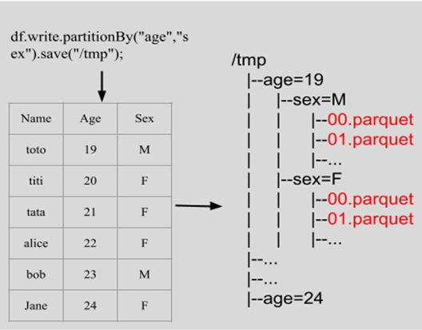
Partitionnement
| Partitions | 2 | 5 | 1000 |
|---|---|---|---|
| Colonne qui a servi au partitionnement | 74,50% | 46,30% | 16,66% |
| Vers une autre colonne | 89,51% | 191,01% | 556,99% |
| Select distinct(*) | 136,79% | 163,68% | 1194,88% |
Éviter le problème des exécuteurs inactifs
Supposons que le jeu de données ait 8 partitions, un exécuteur (avec seulement 1 core) ne peut exécuter qu’une tâche(task) à la fois, et une partition = une tâche.
Cas 1 : 6 exécuteurs, au dernier tour, il ne reste que 2 tâches, 4 exécuteurs seront inactifs. Cas 2 : 4 exécuteurs, 2*4, aucun exécuteur inactif.
- Le nombre de partitions doit être divisible par le nombre d’exécuteurs.
- Le nombre de partitions doit être supérieur au nombre d’exécuteurs.
Éviter trop de partitions
La création de tâches entraîne des surcharges, qui doivent toujours être inférieures à 50 % du temps total d’exécution de la tâche.
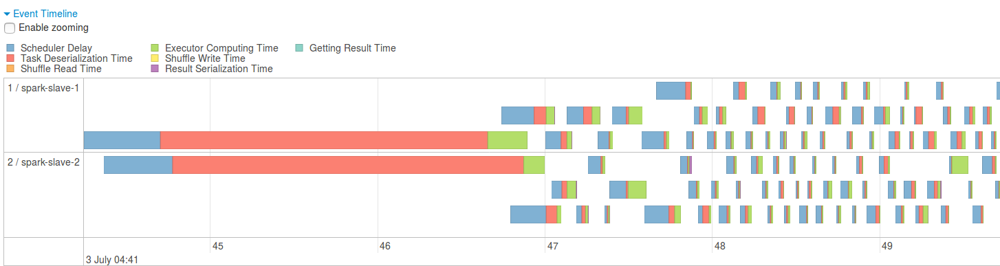
# Repartition the DataFrame to a specific number of partitions df_repartitioned <- sdf_repartition(df, partitions = 10) # Repartition the DataFrame by a specific column, e.g., "commune_code". # The partition number will be the distinct value number df_repartitioned <- sdf_repartition(df, partition_by = "commune_code")La répartition est une opération très coûteuse, utilisez-la judicieusement.
En général, la taille recommandée des partitions est d’environ 128 à 512 Mo.
SparkUI
Spark UI permet de consulter le plan logique et physique du traitement demandé. Trois outils permettent d’optimiser les traitements :
Pyspark
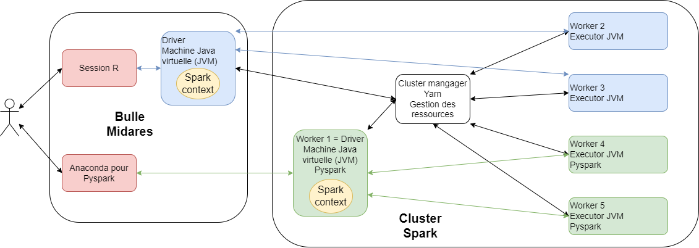
Comment consulter les données disponibles sur HDFS
HDFS dispose d’une interface visuelle sur laquelle on peut voir les tables disponibles : la distribution des données est invisible sur cette interface.